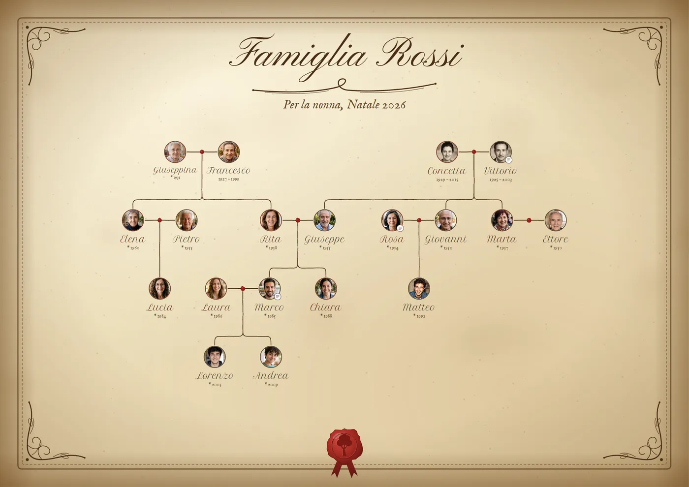
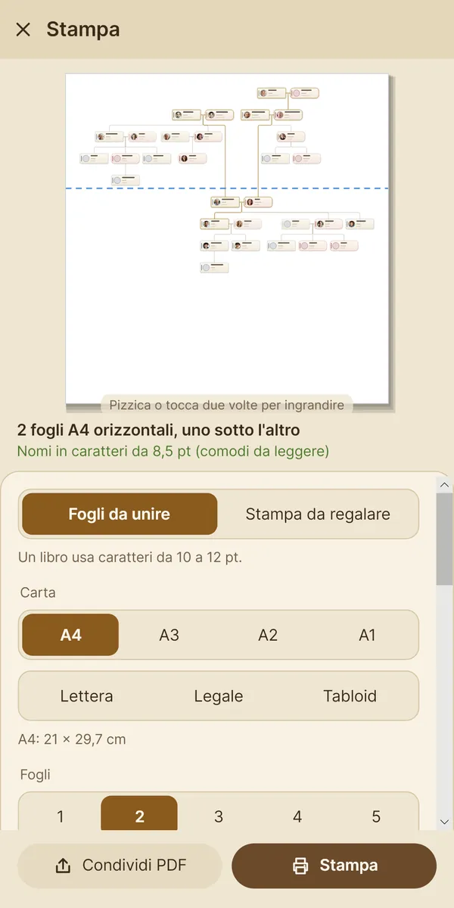

Come stampare il tuo albero genealogico in grande, in 50×70 cm
Un albero genealogico dà il meglio in grande, incorniciato in salotto o a casa dei nonni. Questa guida spiega come scegliere il formato, rendere leggibile ogni nome e farlo stampare senza sorprese.

1. Scegli il formato
La cosa più pratica è stampare l'albero nel formato di una cornice già pronta, così non serve farne una su misura. Le più facili da trovare sono 30×40, 40×50 e 50×70 cm. Ramo le ha tutte, oltre ad A4, A3, A2 e A1.
| Formato | Per cosa | Quante persone, indicativamente |
|---|---|---|
| A4 | La stampante di casa | Fino a circa 35 |
| A3 o 30×40 cm | Un quadro medio o una scrivania | Fino a circa 50 |
| 40×50 cm | Un quadro da parete | Fino a circa 60 |
| 50×70 cm | Il quadro grande del salotto | Fino a circa 90 |
I numeri valgono per schede con foto e nomi di circa 9 punti, e dipendono molto dalla forma dell'albero. Non serve calcolarlo: Ramo ti dice la grandezza esatta dei nomi prima di stampare.
2. Prepara la stampa in Ramo
- Apri l'albero, tocca il menu e scegli Stampa.
- In alto scegli Stampa da regalare e, come carta, 50×70 cm (o il formato della tua cornice).
- In Disposizione dell'albero vedi, sotto ogni opzione, quanto saranno grandi i nomi. La stella ★ indica quella che li rende più grandi.
- Scrivi il titolo («Famiglia Rossi») e, se vuoi, una dedica («Per la nonna, Natale 2026»).
- Scegli lo stile: Pergamena, Carta e inchiostro, Giardino, Album… Ognuno ha la sua cornice, i suoi colori e il suo carattere.


3. Rendi leggibile ogni nome
Come riferimento: 8 punti si leggono da vicino, da 10 a 12 si leggono comodamente con il quadro in mano o su un tavolo, e per leggerlo appeso alla parete è meglio superare 14. Se i nomi vengono piccoli, in Ramo puoi:
- Provare un'altra disposizione: quelle da sinistra a destra aiutano molto con le famiglie molto larghe.
- Togliere dalle schede quello che non ti serve (la foto, gli anni o i cognomi). Ramo ti dice quanto guadagna ogni cosa.
- Avvicinare le schede o usare un margine vicino alla cornice sottile.
- Passare a un formato più grande, o fare una stampa per ramo (quello paterno e quello materno).
Apri l'anteprima a schermo intero e ingrandiscila con le dita: quello che vedi è quello che verrà stampato.
4. Salva il PDF e portalo a stampare
Tocca Condividi PDF e mandatelo per e-mail o salvalo su una chiavetta. Il PDF di Ramo è vettoriale: nomi e linee restano nitidi a qualsiasi dimensione.
In copisteria, in una tipografia digitale o su un sito di stampa poster chiedi:
- La stampa in scala reale (100%), senza «adatta alla pagina».
- Carta fotografica opaca o patinata opaca da 170 a 250 g: niente riflessi dietro al vetro.
- Il taglio alla misura della cornice, se il foglio è più grande.
E se voglio stamparlo a casa?
Scegli Fogli da unire: Ramo distribuisce l'albero su più fogli A4 con i segni per ritagliarli e unirli, e ti mostra prima quanti fogli servono e quanto saranno grandi i nomi. C'è anche nella versione gratuita.
Le stampe da regalare fanno parte di Ramo completo (un solo pagamento). Con la versione gratuita puoi stampare l'albero su fogli, con un piccolo marchio «Fatto con Ramo».
Altre guide